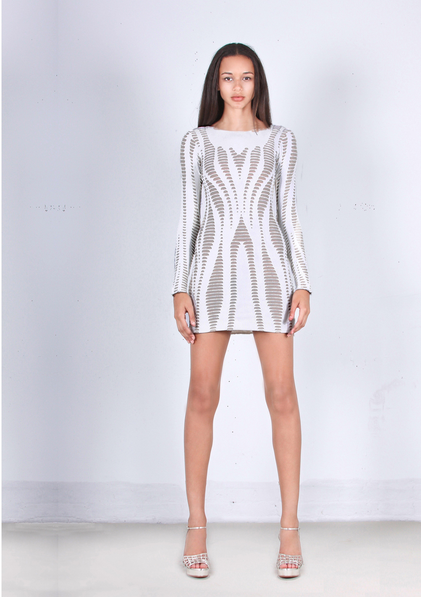

About
Founded by designer Ted Kim in 2011, RVN is a lifestyle brand fueled by the aesthetic and pulse of New York City. The
style and designs of RVN’s collections are the street art to the backdrop of an urban landscape sizzling with creativity:
where dreams are made, stars are born, and where rules are made to be broken.
RVN is known for its collections that re?ect a high-end design sensibility immersed in the attitudes of the city. RVN
juxtaposes efortless style with artistic expression, and celebrates the rebels with a look that’s de?antly chic. RVN is
stocked globally by the world’s premiere retailers including Neiman Marcus, Saks Fifth Avenue, Harvey Nichols, Intermix,
Kitson, Otte, Curve, Ron Herman, Revolve, and Shopbop.